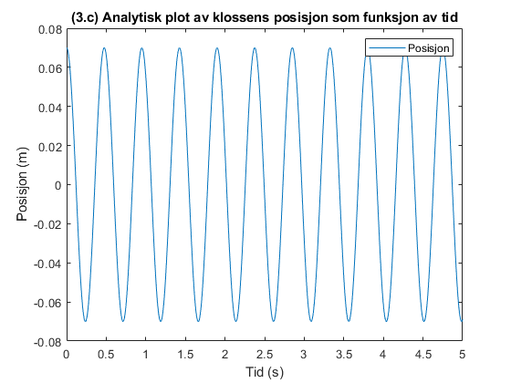
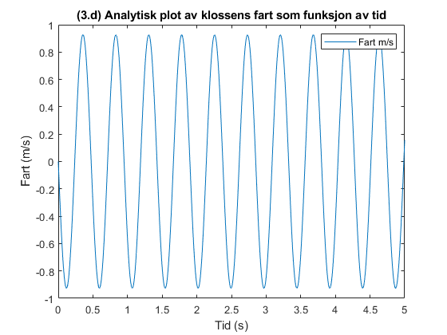
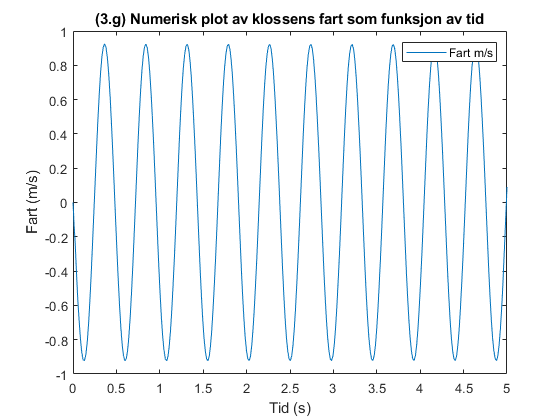
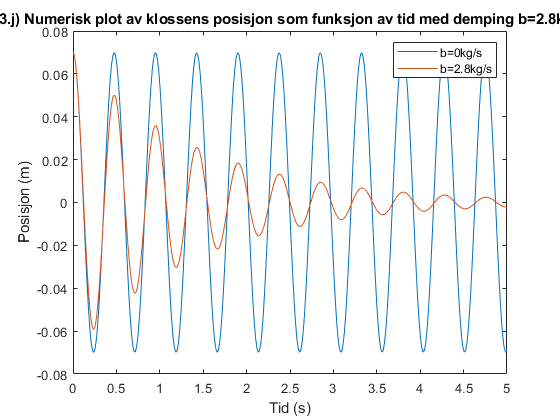
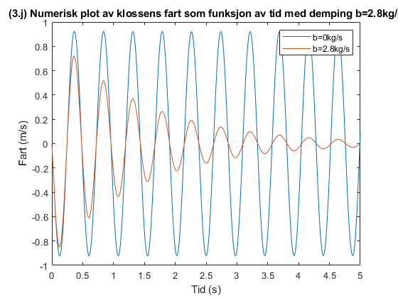
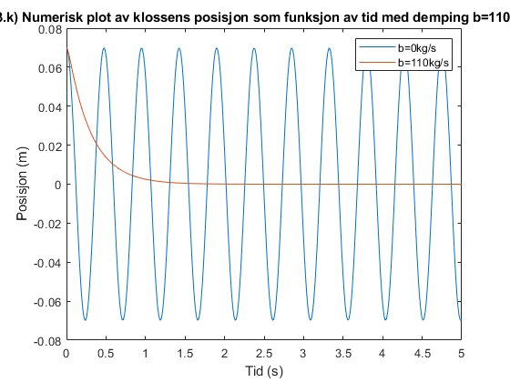
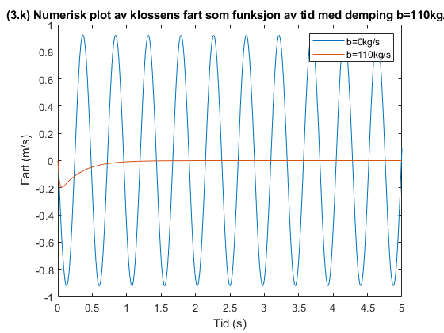
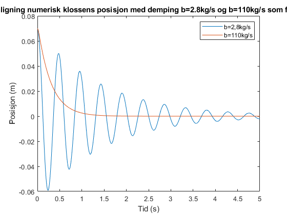
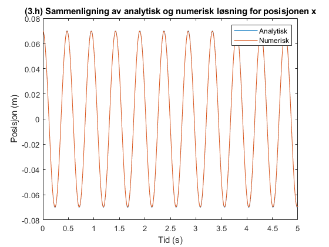
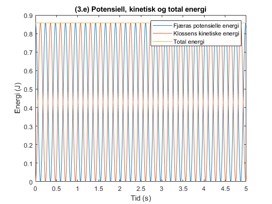

Contents
- Parametre
- (3.b) Beregning av vinkelfrekvens og periode
- (3.c og d) Analytisk beregning av klossens posisjon og fart som funksjon av tid
- (3.e) Beregning av fjæras potensielle, kinetiske og totale energi
- (3.f) Beregning av tilnærmet verdi for posisjonen og fart ved bruk av Eulers midtpunktsmetode
- (3.g) Løsning av bevegelseslikningen ved hjelp av ode45-funksjonen
- (3.j) Løsning av bevegelseslikningen med demping b=2.8kg ved hjelp av ode45-funksjonen
- (3.k) Løsning av bevegelseslikningen med demping b=110kg ved hjelp av ode45-funksjonen
- Utskrift av resultater
- Analytisk plot av klossens posisjon som funksjon av tiden
- Analytisk plot av klossens fart som funksjon av tiden
- Numerisk plot av klossens posisjon som funksjon av tiden
- Numerisk plot av klossens fart som funksjon av tiden
- Numerisk plot av klossens posisjon med demping b=2.8kg/s som funksjon av tiden
- Numerisk plot av klossens fart med demping b=2.8kg/s som funksjon av tiden
- Numerisk plot av klossens posisjon med demping b=110kg/s som funksjon av tiden
- Numerisk plot av klossens fart med demping b=110kg/s som funksjon av tiden
- Sammenligning numerisk klossens posisjon med demping b=2.8kg/s og b=110kg/s som funksjoner av tiden
- Sammenligning klossens posisjon som funksjon av tiden for den analytiske og numeriske løsningen
- Plot av potensiell energi, kinetisk energi og total energi
Parametre
m = 2.0; % Masse i kg k = 350; % Fjærkonstant i N/m b = 2.8; % Dempingskonstant i kg/s b2 = 110; % Dempingskonstant i kg/s x0 = 0.070; % Forskyvning fra likevektsposisjonen i meter v0 = 0; % Startfart i m/s t_start = 0; % Starttid i sekunder t_end = 5; % Slutttid i sekunder t_end_a = 0.3; % t_step = 0.001; % Tidssteg i sekunder dt = 0.05; % Tidssteg i sekunder for Euler's midtpunktsmetode % Tidsvektor for analytisk løsning t_analytisk = t_start:t_step:t_end; % Tidsvektor for numerisk løsning t_numerisk = [t_start t_end];
(3.b) Beregning av vinkelfrekvens og periode
w = sqrt(k/m); % Vinkelfrekvens T = 2*pi/w; % Periode
(3.c og d) Analytisk beregning av klossens posisjon og fart som funksjon av tid
x_analytisk = x0*cos(w*t_analytisk); % Posisjon som funksjon av tid v_analytisk = -x0*w*sin(w*t_analytisk); % Fart som funksjon av tid
(3.e) Beregning av fjæras potensielle, kinetiske og totale energi
Ep = 0.5*k*x_analytisk.^2; % Fjæras potensielle energi som funksjon av tid Ek = 0.5*m*v_analytisk.^2; % Klossens kinetiske energi som funksjon av tid E = Ep + Ek; % Total energi som funksjon av tid % Beregning av total energi E_total = E(1); % Total energi er konstant, bruk første verdi
(3.f) Beregning av tilnærmet verdi for posisjonen og fart ved bruk av Eulers midtpunktsmetode
Initialisering av x og y ved t = 0
x_numerisk(1) = x0; v_numerisk(1) = v0; % Beregning av x og v ved t = dt ved hjelp av Eulers midtpunktsmetode v_half = v_numerisk(1) - 0.5*k/m * x_numerisk(1)*dt; x_numerisk(2) = x_numerisk(1) + v_half*dt; v_numerisk(2) = v_half - 0.5*k/m * x_numerisk(2)*dt; % Beregning av tilnærmet verdi for posisjonen x og fart v ved t = 0.05 s x_numerisk_approx = x_numerisk(2); v_numerisk_approx = v_numerisk(2);
(3.g) Løsning av bevegelseslikningen ved hjelp av ode45-funksjonen
Bevegelsesligningen
dxdt = @(t, x) [x(2); -k/m*x(1)]; % Totalt tidsintervall t_span = [t_start, t_end]; % Startverdier for x og v x0v0 = [x0; v0]; % Løsning av bevegelsesligningen ved hjelp av ode45-funksjonen [t_numerisk_ode, x_numerisk_ode] = ode45(dxdt, t_span, x0v0); % Beregning av klossens posisjon og fart som funksjon av tid x_numerisk_ode = x_numerisk_ode(:, 1); % Beregning av klossens fart som funksjon av tid ved numerisk løsning v_numerisk_ode = diff(x_numerisk_ode)./diff(t_numerisk_ode); v_numerisk_ode = [v_numerisk_ode(1); v_numerisk_ode];
(3.j) Løsning av bevegelseslikningen med demping b=2.8kg ved hjelp av ode45-funksjonen
Bevegelsesligningen
dxdt2 = @(t, x) [x(2); -k/m*x(1) - b/m*x(2)]; % Løsning av bevegelsesligningen ved hjelp av ode45-funksjonen [t_numerisk_ode2, x_numerisk_ode2] = ode45(dxdt2, t_span, x0v0); % Beregning av klossens posisjon og fart som funksjon av tid x_numerisk_ode2 = x_numerisk_ode2(:, 1); % Beregning av klossens fart som funksjon av tid ved numerisk løsning v_numerisk_ode2 = diff(x_numerisk_ode2)./diff(t_numerisk_ode2); v_numerisk_ode2 = [v_numerisk_ode2(1); v_numerisk_ode2];
(3.k) Løsning av bevegelseslikningen med demping b=110kg ved hjelp av ode45-funksjonen
Bevegelsesligningen
dxdt3 = @(t, x) [x(2); -k/m*x(1) - b2/m*x(2)]; % Løsning av bevegelsesligningen ved hjelp av ode45-funksjonen [t_numerisk_ode3, x_numerisk_ode3] = ode45(dxdt3, t_span, x0v0); % Beregning av klossens posisjon og fart som funksjon av tid x_numerisk_ode3 = x_numerisk_ode3(:, 1); % Beregning av klossens fart som funksjon av tid ved numerisk løsning v_numerisk_ode3 = diff(x_numerisk_ode3)./diff(t_numerisk_ode3); v_numerisk_ode3 = [v_numerisk_ode3(1); v_numerisk_ode3];
Utskrift av resultater
fprintf('(3.a) Se vedlagt dokument for utregning.\n'); fprintf('(3.b) Vinkelfrekvens: %.2f rad/s og Periode: %.2f s. Se vedlagt kode for utregning.\n', w, T); fprintf('(3.c) Analytisk løsning. Klossens posisjon ved tiden t = 0.3 er s: %.3f m. Se vedlagt kode for utregning.\n', x_analytisk(t_analytisk==0.3)); fprintf('(3.d) Klossens fart ved tiden t = 0.3 er v: %.3f m/s. Se vedlagt kode for utregning.\n', v_analytisk(t_analytisk==0.3)); fprintf('(3.e) Total energi E: %.2f J. Se vedlagt kode for utregning.\n', E_total); fprintf('(3.f) Numerisk løsning. Tilnærmet verdi for posisjonen x ved t = 0.05 s: %.3f m. Se vedlagt kode og dokument for utregning.\n', x_numerisk_approx); fprintf('(3.g) Numerisk løsning. Se graf-vinduer. Energien er bevart for dette systemet. Se vedlagt kode og dokument for utregning.\n'); fprintf('(3.h) Se graf-vinduer. Ja, det er samsvar mellom den analytiske og numeriske løsningen for x. Se vedlagt kode og dokument for utregning.\n'); fprintf('(3.i) Se vedlagt dokument for utregning.\n'); fprintf('(3.j) Se vedlagte graf-vinduer, kode og dokument.\n'); fprintf('(3.k) Se vedlagte graf-vinduer, kode og dokument.\n');
(3.a) Se vedlagt dokument for utregning. (3.b) Vinkelfrekvens: 13.23 rad/s og Periode: 0.47 s. Se vedlagt kode for utregning. (3.c) Analytisk løsning. Klossens posisjon ved tiden t = 0.3 er s: -0.047 m. Se vedlagt kode for utregning. (3.d) Klossens fart ved tiden t = 0.3 er v: 0.681 m/s. Se vedlagt kode for utregning. (3.e) Total energi E: 0.86 J. Se vedlagt kode for utregning. (3.f) Numerisk løsning. Tilnærmet verdi for posisjonen x ved t = 0.05 s: 0.055 m. Se vedlagt kode og dokument for utregning. (3.g) Numerisk løsning. Se graf-vinduer. Energien er bevart for dette systemet. Se vedlagt kode og dokument for utregning. (3.h) Se graf-vinduer. Ja, det er samsvar mellom den analytiske og numeriske løsningen for x. Se vedlagt kode og dokument for utregning. (3.i) Se vedlagt dokument for utregning. (3.j) Se vedlagte graf-vinduer, kode og dokument. (3.k) Se vedlagte graf-vinduer, kode og dokument.
Analytisk plot av klossens posisjon som funksjon av tiden
figure; %subplot(11,1,1); plot(t_analytisk, x_analytisk); legend('Posisjon'); xlabel('Tid (s)'); ylabel('Posisjon (m)'); title('(3.c) Analytisk plot av klossens posisjon som funksjon av tid');
Analytisk plot av klossens fart som funksjon av tiden
figure; %subplot(11,1,2); plot(t_analytisk, v_analytisk); legend('Fart m/s'); xlabel('Tid (s)'); ylabel('Fart (m/s)'); title('(3.d) Analytisk plot av klossens fart som funksjon av tid');
Numerisk plot av klossens posisjon som funksjon av tiden
figure; %subplot(11,1,3); plot(t_numerisk_ode, x_numerisk_ode); legend('Posisjon'); xlabel('Tid (s)'); ylabel('Posisjon (m)'); title('(3.g) Numerisk plot av klossens posisjon som funksjon av tid');
Numerisk plot av klossens fart som funksjon av tiden
figure; %subplot(11,1,4); plot(t_numerisk_ode, v_numerisk_ode); legend('Fart m/s'); xlabel('Tid (s)'); ylabel('Fart (m/s)'); title('(3.g) Numerisk plot av klossens fart som funksjon av tid');
Numerisk plot av klossens posisjon med demping b=2.8kg/s som funksjon av tiden
figure; %subplot(11,1,5); plot(t_numerisk_ode, x_numerisk_ode, t_numerisk_ode2, x_numerisk_ode2); legend('b=0kg/s', 'b=2.8kg/s'); xlabel('Tid (s)'); ylabel('Posisjon (m)'); title('(3.j) Numerisk plot av klossens posisjon som funksjon av tid med demping b=2.8kg/s');
Numerisk plot av klossens fart med demping b=2.8kg/s som funksjon av tiden
figure; %subplot(11,1,6); plot(t_numerisk_ode, v_numerisk_ode,t_numerisk_ode2, v_numerisk_ode2); legend('b=0kg/s', 'b=2.8kg/s'); xlabel('Tid (s)'); ylabel('Fart (m/s)'); title('(3.j) Numerisk plot av klossens fart som funksjon av tid med demping b=2.8kg/s');
Numerisk plot av klossens posisjon med demping b=110kg/s som funksjon av tiden
figure; %subplot(11,1,7); plot(t_numerisk_ode, x_numerisk_ode, t_numerisk_ode3, x_numerisk_ode3); legend('b=0kg/s', 'b=110kg/s'); xlabel('Tid (s)'); ylabel('Posisjon (m)'); title('(3.k) Numerisk plot av klossens posisjon som funksjon av tid med demping b=110kg/s');
Numerisk plot av klossens fart med demping b=110kg/s som funksjon av tiden
figure; %subplot(11,1,8); plot(t_numerisk_ode, v_numerisk_ode,t_numerisk_ode3, v_numerisk_ode3); legend('b=0kg/s', 'b=110kg/s'); xlabel('Tid (s)'); ylabel('Fart (m/s)'); title('(3.k) Numerisk plot av klossens fart som funksjon av tid med demping b=110kg/s');
Sammenligning numerisk klossens posisjon med demping b=2.8kg/s og b=110kg/s som funksjoner av tiden
figure; %subplot(11,1,9); plot(t_numerisk_ode2, x_numerisk_ode2, t_numerisk_ode3, x_numerisk_ode3); legend('b=2,8kg/s', 'b=110kg/s'); xlabel('Tid (s)'); ylabel('Posisjon (m)'); title('(3.k) Sammenligning numerisk klossens posisjon med demping b=2.8kg/s og b=110kg/s som funksjoner av tid');
Sammenligning klossens posisjon som funksjon av tiden for den analytiske og numeriske løsningen
figure; %subplot(11,1,10) plot(t_analytisk, x_analytisk, t_numerisk_ode, x_numerisk_ode); legend('Analytisk', 'Numerisk'); xlabel('Tid (s)'); ylabel('Posisjon (m)'); title('(3.h) Sammenligning av analytisk og numerisk løsning for posisjonen x');
Plot av potensiell energi, kinetisk energi og total energi
figure; %subplot(11,1,11); plot(t_analytisk, Ep, t_analytisk, Ek, t_analytisk, E); legend('Fjæras potensielle energi', 'Klossens kinetiske energi', 'Total energi'); xlabel('Tid (s)'); ylabel('Energi (J)'); title('(3.e) Potensiell, kinetisk og total energi');